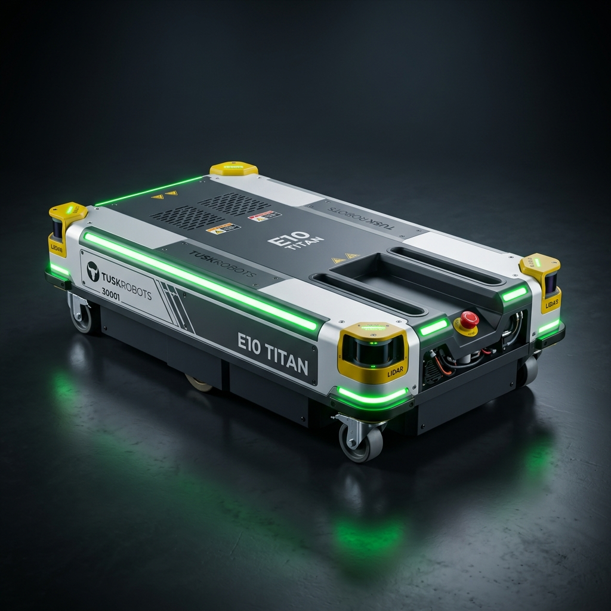
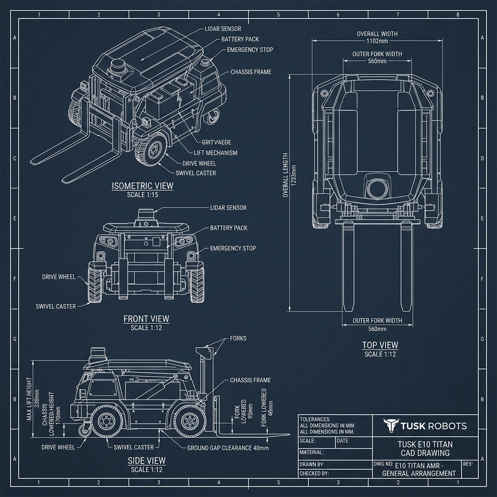

This engineering guide details the exact mechanical dimensions, specifications, CAD blueprints, and component callouts for the Tusk Robots E10 (Titan) heavy-load low-profile pallet AMR (Invisible Fork Arm / Recessed Channel design).
The Tusk E10 (Titan) is Tusk Robots' flagship high-capacity autonomous mobile robot designed for handling heavy pallets (up to 1,500 kg) in narrow aisles without traditional bulky fork masts.

Use these exact dimensions when setting up sketch origins, planes, and extrusions in SolidWorks, Fusion 360, or Inventor:
| Parameter / Feature | E10 (Titan) Dimension | Tolerance | CAD Modeling Notes |
|---|---|---|---|
| Rated Load Capacity | 1,200 kg (Max 1,500 kg) | — | Industrial heavy-payload class |
| Robot Self-Weight | 310 kg | \pm 5.0\text{ kg} | Includes battery and drive motors |
| Overall Robot Length | 1233 mm (Standard) / 1399 mm (SLAM) | \pm 1.0\text{ mm} | Length of outer chassis envelope |
| Overall Robot Width | 1102 mm | \pm 1.0\text{ mm} | Chassis outer side panel width |
| Chassis Lowered Height | 170 mm | \pm 0.5\text{ mm} | Total height from floor to top deck |
| Fork Lowered Height | 90 mm | \pm 0.5\text{ mm} | Has 7\text{ mm} downward floating stroke |
| Max Lifting Height | \le 330\text{ mm} | \pm 1.0\text{ mm} | Total vertical lift travel: 160\text{ mm} |
| Fork Stretch / Reach Limit | 1400 mm max | \pm 2.0\text{ mm} | Telescopic extension option |
| Outer Fork Assembly Width | 560 mm | \pm 0.5\text{ mm} | Fits standard EUR-2 / ISO pallets |
| Inner Fork Gap | 240 mm | \pm 0.5\text{ mm} | Width between left & right tynes |
| Individual Tyne Width | 160 mm | \pm 0.5\text{ mm} | \frac{560 - 240}{2} = 160\text{ mm} |
| Ground Gap Clearance | 40 mm | \pm 0.5\text{ mm} | Chassis bottom plate to floor |
| Step Crossing Capacity | 15 mm | \pm 1.0\text{ mm} | Max obstacle step height |
| Max Slope / Gradeability | 4^\circ (7\%) | — | Fully loaded gradeability limit |
| Max Travel Speed | 2.0 m/s (Empty) / 1.5 m/s (Loaded) | — | Closed-loop speed control |
Use this engineering blueprint sheet for orthographic projection alignment and dimension placement:

| Subsystem | Component Name | Material / Spec | Quantity | Engineering Function |
|---|---|---|---|---|
| Chassis Frame | Base Weldment | Q235 Steel Tube (80\times 60\times 4\text{ mm}) | 1 Set | Main structural load-bearing frame |
| Top Deck | Cover Plate | Q235 Steel Plate (8\text{ mm}) | 1 Set | Recessed center deck with embedded tynes |
| Drive Motors | BLDC Gearmotors | 750W 24V BLDC (1:20 Planetary Gearbox) | 2 Pcs | Differential center-axis drive unit |
| Drive Wheels | Motorized Wheels | Polyurethane (\varnothing 200\text{ mm} \times 65\text{ mm}, \varnothing 25\text{ mm} Bore) | 2 Pcs | High friction floor traction |
| Load Rollers | Tandem Rollers | Polyurethane 95A (\varnothing 60\text{ mm} \times 180\text{ mm}) | 4 Pcs | Housed inside 198\text{ mm} bogie housing |
| Lift Drive | Ball Screw | SFU2505 (Dia 25\text{ mm}, Lead 5\text{ mm}, 600\text{ mm} L) | 1 Pc | Driven by 1000W BLDC lift motor |
| Guide Rails | Linear Guides | HGR25 Rails (1100\text{ mm}) + 4\times HGH25CA | 2 Sets | Smooth vertical carriage elevation |
| Corner Casters | Swivel Casters | Heavy-Duty Low-Profile (\varnothing 60\text{ mm} wheels) | 4 Pcs | Supports 4 corners during tight turns |
| Safety Sensors | Laser LiDAR | 360° Safety LiDAR Scanners | 2 Pcs | Corner diagonal obstacle sensing |
| Battery | Battery Pack | 24V / 48V LiFePO4 Battery Pack | 1 Pc | \ge 6\text{ hours} runtime, fast charging |
1. Machining Tolerances (ISO 2768-m):
2. Welding Notes:
3. Surface Treatment: